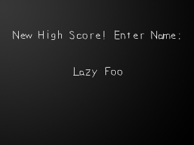

这里我们需要在玩家获得高分时得到他们的姓名。再你过去的日子里，你使用cin来得到字符串输入。由于SDL没有内置的方法来获取用户的名字，我们将自己创建一个函数来处理按键来得到字符串输入。
译者注：cin是C++标准输入，scanf 则是C的标准输入。二者用法不同，功能类似。
//按键解释器
class StringInput
{
private:
//存储字符串
std::string str;
//文本表面
SDL_Surface *text;
public:
//初始化变量
StringInput();
//完成清理
~StringInput();
//处理输入
void handle_input();
//在屏幕上显示信息
void show_centered();
};
这是我们用于管理字符串输入的类。
说到其中的变量，我们有一个string用来存储真正的字符串数据，还有一个surface用于渲染文本。
然后我们有构造函数和析构函数，还有
说到其中的变量，我们有一个string用来存储真正的字符串数据，还有一个surface用于渲染文本。
然后我们有构造函数和析构函数，还有
handle_input()函数来处理用户输入，以及show_centered()函数来将字符串显示在屏幕上。
译者注：std::string是C++标准库中的字符串，在第二课中已作简单说明。(点此回看)
StringInput::StringInput()
{
//初始化字符串
str = "";
//初始化表面
text = NULL;
//启用Unicode
SDL_EnableUNICODE( SDL_ENABLE );
}
StringInput::~StringInput()
{
//释放文本表面
SDL_FreeSurface( text );
//禁用Unicode
SDL_EnableUNICODE( SDL_DISABLE );
}
在构造函数中，紧接在变量初始化的后面，我们使用
在析构函数中，我们释放了我们的文本表面并禁用了Unicode。尽管启用Unicode使得字符串输入容易很多，它增加了点系统负载。当你不再使用这个类时，你应该禁用Unicode。
SDL_EnableUNICODE()函数启用了Unicode。就像你将在后面看到的那样，这能让获取字符串输入变得简单很多。
在析构函数中，我们释放了我们的文本表面并禁用了Unicode。尽管启用Unicode使得字符串输入容易很多，它增加了点系统负载。当你不再使用这个类时，你应该禁用Unicode。
void StringInput::handle_input()
{
//如果一个按键被按下
if( event.type == SDL_KEYDOWN )
{
//复制当前版本的字符串
std::string temp = str;
//如果字符串小于最大长度
if( str.length() <= 16 )
{
现在是时候处理用户输入了。
当用户按下一个键时，我们首先存储一份当前版本的字符串。我将在后面告诉你为什么要这么做。
然后我们检查一下字符串是否超过最大长度。这里我将最大长度设置为16，但你可你将它设为你想要的任意值。
当用户按下一个键时，我们首先存储一份当前版本的字符串。我将在后面告诉你为什么要这么做。
然后我们检查一下字符串是否超过最大长度。这里我将最大长度设置为16，但你可你将它设为你想要的任意值。
//如果按键是一个空格
if( event.key.keysym.unicode == (Uint16)' ' )
{
//在字符串末尾添加这个字符
str += (char)event.key.keysym.unicode;
}
字符串输入的基本概念是当用户按下A，加上字符'A'；当用户按下B，加上字符'B'……
由于
如果你不知道Unicode是什么，它实际上就是ASCII的一种扩展。它的单个字符长度不是8bit，而是16bit，从而能保存所有的国际字符。
这里如果被按下的键的Unicode值是空格字符，我们将它添加到字符串中。由于标准字符串仅仅使用8bit ASCII字符，我们在添加字符时必须将其转换。
由于
SDLKey的定义并不与其对应的ASCII/Unicode值匹配，我们启用了Unicode，来使Keysym结构体中的unicode成员与按键字符的Unicode值匹配。启用Unicode也会在你需要输入大写字符或符号时，自动处理Shift和CapsLock。
如果你不知道Unicode是什么，它实际上就是ASCII的一种扩展。它的单个字符长度不是8bit，而是16bit，从而能保存所有的国际字符。
这里如果被按下的键的Unicode值是空格字符，我们将它添加到字符串中。由于标准字符串仅仅使用8bit ASCII字符，我们在添加字符时必须将其转换。
//如果按键是数字
else if( ( event.key.keysym.unicode >= (Uint16)'0' ) && ( event.key.keysym.unicode <= (Uint16)'9' ) )
{
//添加字符
str += (char)event.key.keysym.unicode;
}
//如果按键是一个大写字母
else if( ( event.key.keysym.unicode >= (Uint16)'A' ) && ( event.key.keysym.unicode <= (Uint16)'Z' ) )
{
//添加字符
str += (char)event.key.keysym.unicode;
}
//如果按键是一个小写字符
else if( ( event.key.keysym.unicode >= (Uint16)'a' ) && ( event.key.keysym.unicode <= (Uint16)'z' ) )
{
//添加字符
str += (char)event.key.keysym.unicode;
}
}
在这个程序里，我们仅需要显示空格(ASCII/Unicode 32), 数字 (48-57), 大写字母 (65-90), 和小写字母 (97-122)。所以这里我们限制了允许添加到字符串的字符范围。
//如果退格键被按下并且字符串不为空
if( ( event.key.keysym.sym == SDLK_BACKSPACE ) && ( str.length() != 0 ) )
{
//从末尾移除一个字符
str.erase( str.length() - 1 );
}
这里我们处理了用户按下退格键Backspace的情况。
我们检查一下字符串是否为空，如果不为空，我们去掉了字符串的最后一个字符。
我们检查一下字符串是否为空，如果不为空，我们去掉了字符串的最后一个字符。
//如果字符串发生更改
if( str != temp )
{
//释放旧的文本表面
SDL_FreeSurface( text );
//渲染一个新的文本表面
text = TTF_RenderText_Solid( font, str.c_str(), textColor );
}
}
}
最后，我们检查当前字符串是否与我们之前拷贝的字符串相比发生了改变。
如果字符串改变了，我们释放旧的文本表面，并渲染一个新的。
如果字符串改变了，我们释放旧的文本表面，并渲染一个新的。
void StringInput::show_centered()
{
//如果表面不是空的
if( text != NULL )
{
//显示姓名
apply_surface( ( SCREEN_WIDTH - text->w ) / 2, ( SCREEN_HEIGHT - text->h ) / 2, text, screen );
}
}
在我们的
在这个程序中，我们要检查文本表面是否为NULL，因为当你尝试用一个空字符串(也就是"")渲染一个表面时，SDL_ttf会返回NULL。这是合理的，因为没有任何东西需要渲染。
show_centered()函数中，我们将文本表面居中显示在屏幕上。
在这个程序中，我们要检查文本表面是否为NULL，因为当你尝试用一个空字符串(也就是"")渲染一个表面时，SDL_ttf会返回NULL。这是合理的，因为没有任何东西需要渲染。
int main( int argc, char* args[] )
{
//退出标识
bool quit = false;
//跟踪用户是否输入了名字
bool nameEntered = false;
//初始化
if( init() == false )
{
return 1;
}
//获取用户姓名
StringInput name;
//加载文件
if( load_files() == false )
{
return 1;
}
//设置信息
message = TTF_RenderText_Solid( font, "New High Score! Enter Name:", textColor );
在
我们有特殊的初始化和加载操作，但我们也需要在进入主循环前渲染信息表面。
main()函数的顶部，我们有两个新的变量。"nameEntered"是一个标识，指示用户是否输入了他们的名字，显然我们将它初始化为false；"name"当然就是我们所创建的获取用户姓名的类的对象了。
我们有特殊的初始化和加载操作，但我们也需要在进入主循环前渲染信息表面。
//当用户还未退出
while( quit == false )
{
//当有事件需要处理
while( SDL_PollEvent( &event ) )
{
//如果用户还未输入其姓名
if( nameEntered == false )
{
//获取用户输入
name.handle_input();
//如果回车键被按下
if( ( event.type == SDL_KEYDOWN ) && ( event.key.keysym.sym == SDLK_RETURN ) )
{
//改变标识的值
nameEntered = true;
//释放旧的信息表面
SDL_FreeSurface( message );
//改变信息
message = TTF_RenderText_Solid( font, "Rank: 1st", textColor );
}
}
//如果用户叉掉了窗口
if( event.type == SDL_QUIT )
{
//退出程序
quit = true;
}
}
这是主循环中事件处理的部分。
首先我们检查用户是否仍在输入姓名。如果是的，我们调用StringInput对象的
当用户按下回车键Enter，这意味着用户完成了输入，所以我们将"nameEntered"标识设为true。然后，我们释放旧的信息表面，并渲染一个新的。
and of course we also check if the user wants to X out. 当然，我们也检查用户是否叉掉了窗口。
首先我们检查用户是否仍在输入姓名。如果是的，我们调用StringInput对象的
handle_input()，让它做它应该做的事。
当用户按下回车键Enter，这意味着用户完成了输入，所以我们将"nameEntered"标识设为true。然后，我们释放旧的信息表面，并渲染一个新的。
and of course we also check if the user wants to X out. 当然，我们也检查用户是否叉掉了窗口。
//应用背景
apply_surface( 0, 0, background, screen );
//显示信息
apply_surface( ( SCREEN_WIDTH - message->w ) / 2, ( ( SCREEN_HEIGHT / 2 ) - message->h ) / 2, message, screen );
//在屏幕上显示姓名
name.show_centered();
//更新屏幕
if( SDL_Flip( screen ) == -1 )
{
return 1;
}
}
现在，这是主循环的渲染部分。
这里没有什么新的东西，我们只是应用了背景和信息表面，并显示了我们输入的文本。
在本课中，我们只是处理了字符串输入，但整数输入也并不比这个难多少。C标准函数库中有一个
这里没有什么新的东西，我们只是应用了背景和信息表面，并显示了我们输入的文本。
在本课中，我们只是处理了字符串输入，但整数输入也并不比这个难多少。C标准函数库中有一个
atoi()函数，用于从字符串获得整数。其中也有其他处理浮点数的函数。
(查看详细)
译者注：要使用C标准函数库，C语言需要包含头文件
stdlib.h，C++则需要包含与之等价的cstdlib。